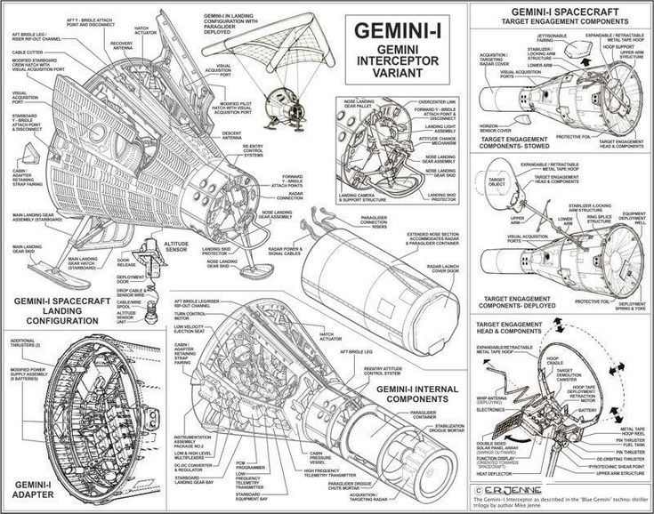

Responsável por construções, inspeções e projetos de satélites, foguetes, aviões, helicópteros e veículos espaciais em geral.. As atuações desempenhadas no ramo aeroespacial podem ser estratégicas para um país.
O Engenheiro aeroespacial está habilitado para o desenvolvimento e a realização de inspeções em planadores, veículos espaciais, satélites e lançadores de satélites, foguetes, helicópteros e aviões
De acordo com a Agência Espacial Brasileira, o profissional terá habilidades para projetar, controlar e testar sistemas do setor aeroespacial, além de atuar com planejamento e testagem dos sistemas, sejam eles de propulsão, mecânico ou energia.
A área de Engenharia Aeroespacial lida, entre outras coisas, com o processo de projetar, criar, construir e fabricar qualquer artefato que voe. Jatos, helicópteros e espaçonaves, por exemplo, fazem parte deste campo, que tem dois principais ramos:
Engenharia Aeronáutica e Engenharia Astronáutica. O primeiro lida com qualquer aeronave que voe na atmosfera terrestre. O último lida com qualquer artefato que voe fora da atmosfera.
Grade do curso
Aerotermodinâmica e Hipersônica
Álgebra Linear e Geometria Analítica
Algoritmos e Programação
Ambiente Espacial
Cálculo
Ciência dos Materiais
Circuitos Elétricos

Desenho Técnico
Engenharia de Segurança
Engenharia de Veículos Aeroespaciais
Equações Diferenciais
Escoamentos Compressíveis
Estatística
Estruturas Aeroespaciais
Física
Mecânica
Mecânica de Fluidos
Mecânica de Sólidos
Mecânica do Voo
Motores de Combustão Interna
Química
Universidades
ITA
O Instituto Tecnológico de Aeronáutica (ITA) é uma instituição universitária pública ligada ao Comando da Aeronáutica (COMAER). Está localizado no Departamento de Ciência e Tecnologia Aeroespacial (DCTA), na cidade paulista de São José dos Campos. Especializado nas áreas de ciência e tecnologia no Setor Aeroespacial.
A Universidade Federal do ABC (UFABC) é uma instituição pública federal de ensino superior no ABC Paulista. Ocupa o 1° lugar entre as universidades brasileiras no Ranking SCImago nos quesitos “Excelência em Pesquisa”, “Publicações de alta qualidade” e “Impacto normalizado das suas publicações”.
A Universidade Federal de Santa Catarina (UFSC) tem seu campus-sede localizado em Florianópolis, capital do estado de Santa Catarina. Fundada em 18 de dezembro de 1960, com o objetivo de promover ensino, pesquisa e extensão, a UFSC oferece educação pública e gratuita e está entre as melhores universidades do país e da América Latina.
Localizada na Região Sudeste, a mais industrializada do Brasil, a UFMG, instituição pública de ensino superior gratuito, é a mais antiga universidade do estado de Minas Gerais. A instituição é liderança regional e nacional em ensino, extensão, cultura, pesquisa científica e geração de patentes, em diversas áreas do conhecimento.
Está sediada em Santa Maria (Rio Grande do Sul, Brasil), bairro Camobi, na Cidade Universitária Prof. José Mariano da Rocha Filho, onde acontece a maior parte de suas atividades acadêmicas e administrativas. Possui, ainda, três campi fora de sede: um em Frederico Westphalen, um em Palmeira das Missões e outro em Cachoeira do Sul.
O mercado de trabalho para engenheiros aeroespaciais está em expansão. O aquecimento da indústria aérea e de comunicação tem contribuído para o aumento da oferta de emprego para profissionais da Engenharia Aeroespacial.A demanda por profissionais capacitados na área Aeroespacial era preenchida por engenheiros mecânicos, aeronáuticos ou profissionais vindos de outros países. A pouca quantidade de profissionais se formando nessa área é um indicativo de que os engenheiros aeroespaciais podem encontrar boa empregabilidade.
Por ter uma formação multidisciplinar, a profissão de engenheiro aeroespacial possibilita a atuação em diferentes áreas da engenharia. Dessa forma, o profissional terá habilidades para projetar, controlar e testar sistemas do setor aeroespacial, atuar com desenvolvimento e avaliação desses sistemas, sejam eles de propulsão, mecânico, energia, entre outros. O engenheiro aeroespacial pode realizar atividades como:
• Desenvolver tecnologias inovadoras e sistemas defensivos para serem usados no setor da aviação.
• Atuar no design estrutural de aeronaves, com o controle e navegação ou ainda com a produção dos sistemas de comunicação espaciais.
• Especializar-se em determinados tipos de produtos, como helicópteros, caças militares, satélites e mísseis.
Startups
Outra possibilidade de atuação no mercado de trabalho é a criação de startups, modelos de empresas jovens movidas por um formato de negócio repetível e escalável. Startups, em geral, não possuem foco necessariamente apenas em produtos, mas também no valor agregado ao projeto, ou seja, em como o negócio pode solucionar o problema de um cliente.
.pós-graduação
lato sensu x stricto sensu
Tanto “lato sensu” quanto “stricto senso” são expressões que vêm do latim. Elas significam, respectivamente, “sentido amplo” e “sentido estrito”. Em outras palavras, se referem a cursos de pós-graduação em sentido mais amplo ou mais estrito.
O “sentido estrito” (ou stricto sensu) é aquele que está mais ligado à interpretação acadêmica tradicional do que é uma pós-graduação. Ou seja: é um mestrado ou doutorado focado em pesquisa e produção científica. Eles concedem o título de “mestre” ou “doutor” a quem os conclui, e exigem a produção de uma tese ou monografia no final.
Já o “sentido amplo” (ou lato sensu) não está tão ligado a essa tradição. São programas de pós-graduação que efetivamente ampliam o que foi aprendido na graduação, mas sem um vínculo acadêmico tão forte. A ausência desse vínculo permite que eles sejam oferecidos em uma maior variedade de áreas, e frequentemente eles se aproximam mais do mercado de trabalho.
Cursos de Pós-Graduação (ITA)
O ITA oferece cursos de Mestrado e Doutorado por meio de cinco programas de pós-graduação, subdivididos em 20 áreas de concentração:
Engenharia Aeronáutica e Mecânica
• EAM-1 - Projeto Aeronáutico, Estruturas e Sistemas Aeroespaciais
• EAM-2 - Propulsão Aeroespacial e Energia
• EAM-3 - Materiais, Manufatura e Automação
Ciências e Tecnologias Espaciais
• CTE-F - Física e Matemática Aplicadas
• CTE-P - Propulsão Espacial e Hipersônica
• CTE-Q - Química dos materiais
• CTE-S - Sensores e Atuadores Espaciais
• CTE-E - Sistemas Espaciais, Ensaios e Lançamentos
• CTE-G - Gestão Tecnológica
Engenharia de Infraestrutura Aeronáutica
• EIA-I - Infra-Estrutura Aeroportuária
• EIA-T- Transporte Aéreo e Aeroportos
Engenharia Eletrônica e de Computação (PG/EEC)
• EEC-D - Dispositivos e Sistemas Eletrônicos
• EEC-I - Informática
• EEC-M - Microondas e Optoeletrônica
• EEC-S - Sistemas e Controle
• EEC-T – Telecomunicações
Física (PG/FIS)
• FIS-A - Física Atômica e Molecular
• FIS-C - Dinâmica Não-linear e Sistemas Complexos